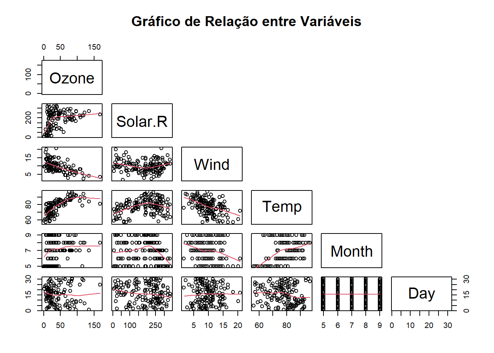
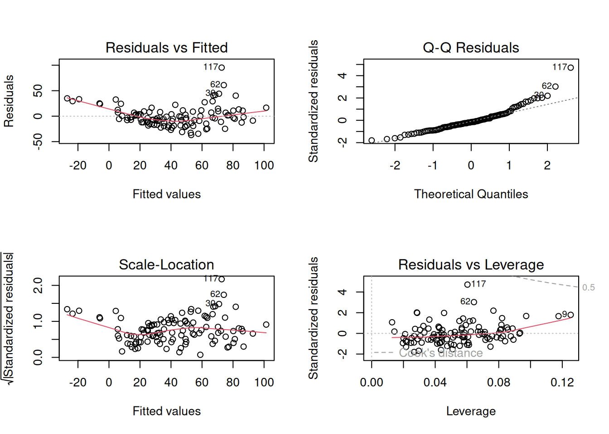
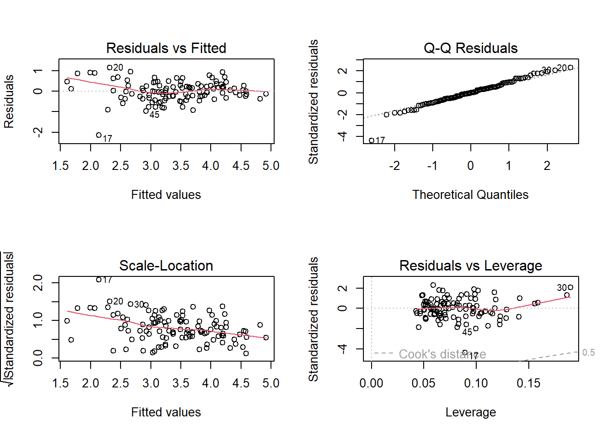
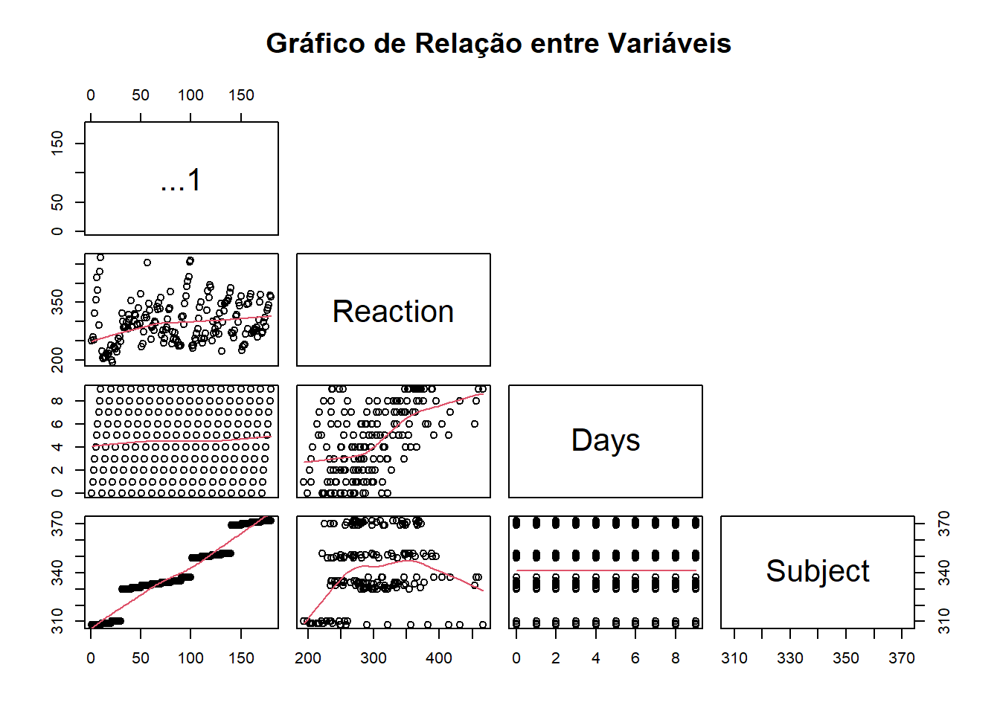
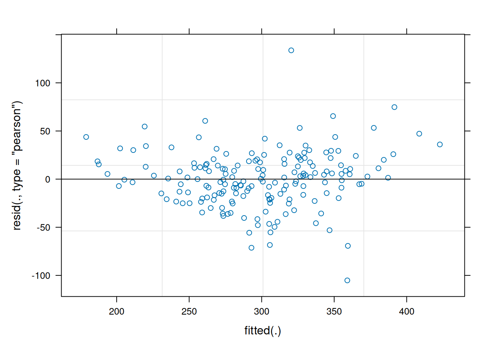
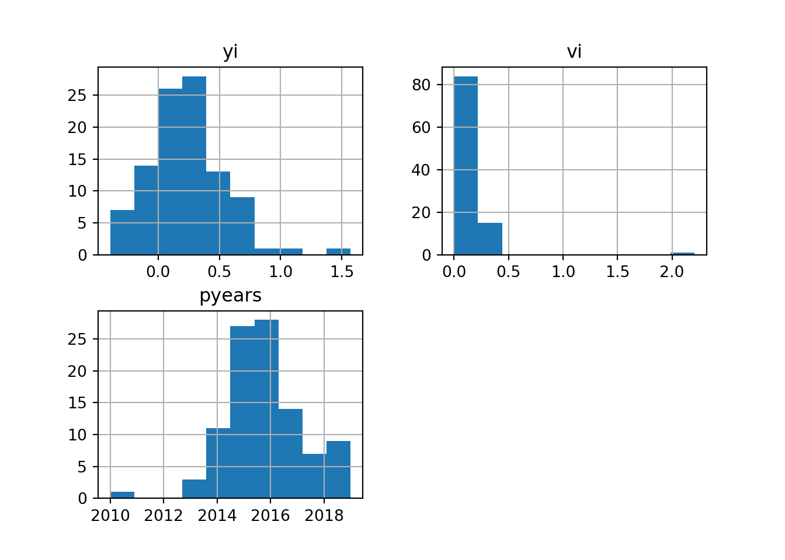
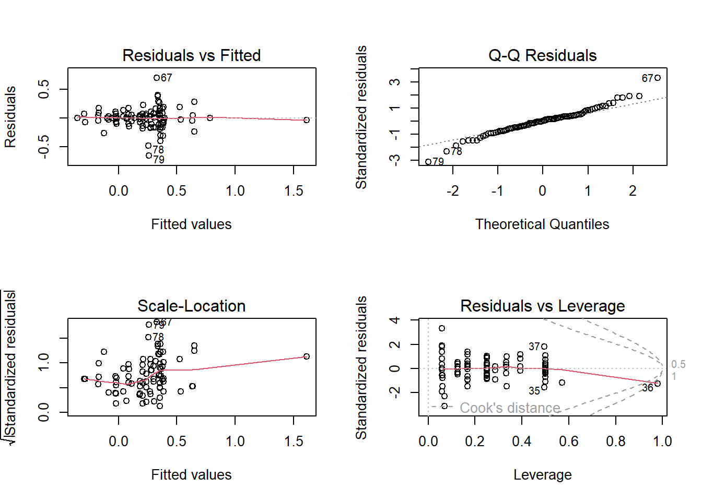
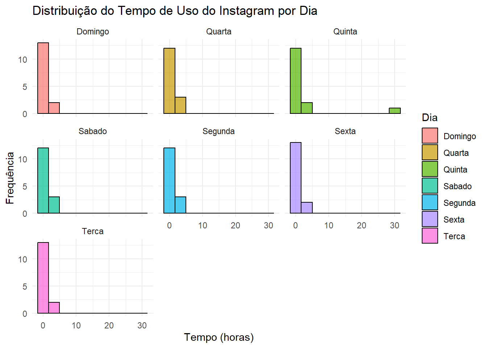
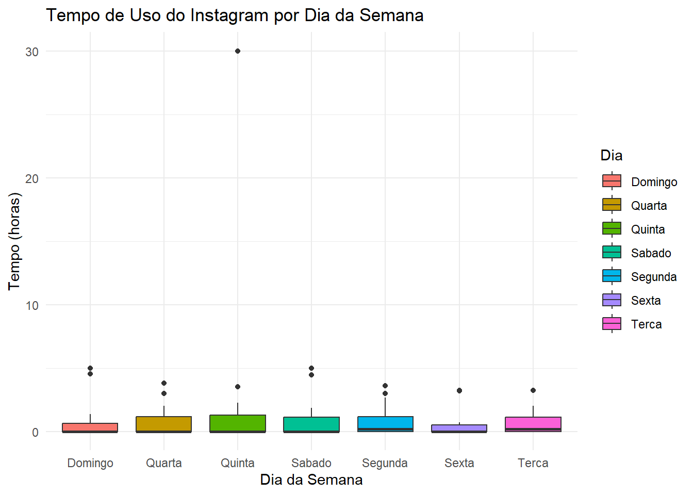
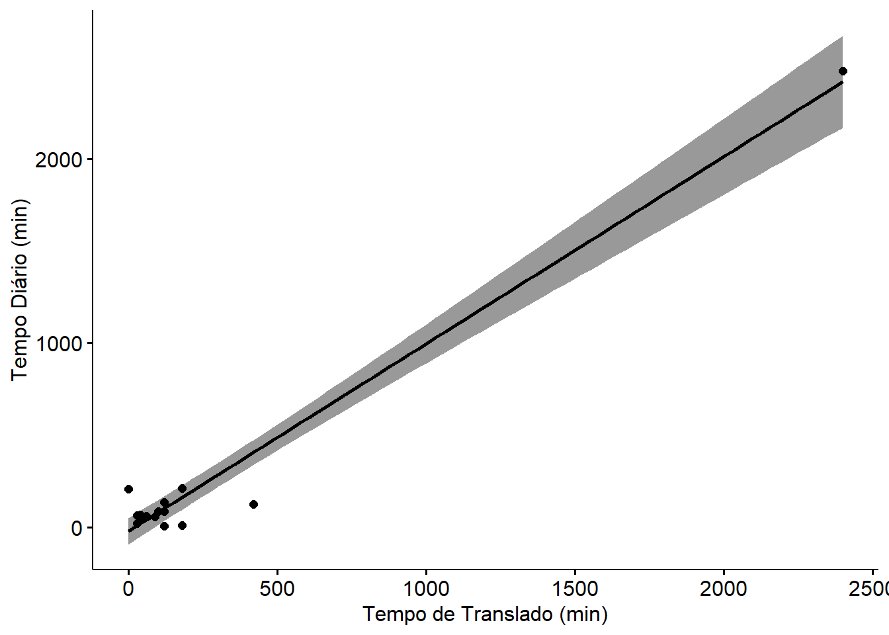

library(lmtest)
library(lme4)
>> Carregando pacotes exigidos: Matrix
>>
>> Anexando pacote: 'Matrix'
>> Os seguintes objetos são mascarados por 'package:tidyr':
>>
>> expand, pack, unpack
library(ggplot2)
library(dplyr)
library(tidyr)
library(readr)
library(stringr)Trabalho Final
Modelagem Estatística
1 Bibliotecas
2 Qualidade do Ar
2.1 Estudo sobre a base de dados
airquality_data <- read.csv("data/airquality.csv")
head(airquality_data)
>> rownames Ozone Solar.R Wind Temp Month Day
>> 1 1 41 190 7.4 67 5 1
>> 2 2 36 118 8.0 72 5 2
>> 3 3 12 149 12.6 74 5 3
>> 4 4 18 313 11.5 62 5 4
>> 5 5 NA NA 14.3 56 5 5
>> 6 6 28 NA 14.9 66 5 6summary(airquality)
>> Ozone Solar.R Wind Temp
>> Min. : 1.00 Min. : 7.0 Min. : 1.700 Min. :56.00
>> 1st Qu.: 18.00 1st Qu.:115.8 1st Qu.: 7.400 1st Qu.:72.00
>> Median : 31.50 Median :205.0 Median : 9.700 Median :79.00
>> Mean : 42.13 Mean :185.9 Mean : 9.958 Mean :77.88
>> 3rd Qu.: 63.25 3rd Qu.:258.8 3rd Qu.:11.500 3rd Qu.:85.00
>> Max. :168.00 Max. :334.0 Max. :20.700 Max. :97.00
>> NA's :37 NA's :7
>> Month Day
>> Min. :5.000 Min. : 1.0
>> 1st Qu.:6.000 1st Qu.: 8.0
>> Median :7.000 Median :16.0
>> Mean :6.993 Mean :15.8
>> 3rd Qu.:8.000 3rd Qu.:23.0
>> Max. :9.000 Max. :31.0
>> # Ajustar o tamanho do gráfico na célula do notebook
options(repr.plot.width = 12, repr.plot.height = 8)
# Gráfico de relação entre as variáveis
pairs(airquality, main = "Gráfico de Relação entre Variáveis",
lower.panel = panel.smooth, upper.panel = NULL)
# Ajustar o tamanho do gráfico na célula do notebook
options(repr.plot.width = 8, repr.plot.height = 8)
# Aplicação de um modelo de regressão linear
model_airquality = lm(Ozone ~., data=airquality)
# Gráficos de resíduos
par(mfrow = c(2, 2))
plot(model_airquality)
# Coeficiente de Determinação (R²) com uma mensagem explicativa
cat("O coeficiente de determinação (R²) do modelo é:", round(summary(model_airquality)$r.squared, 4), "\n")
>> O coeficiente de determinação (R²) do modelo é: 0.6249
summary(model_airquality)
>>
>> Call:
>> lm(formula = Ozone ~ ., data = airquality)
>>
>> Residuals:
>> Min 1Q Median 3Q Max
>> -37.014 -12.284 -3.302 8.454 95.348
>>
>> Coefficients:
>> Estimate Std. Error t value Pr(>|t|)
>> (Intercept) -64.11632 23.48249 -2.730 0.00742 **
>> Solar.R 0.05027 0.02342 2.147 0.03411 *
>> Wind -3.31844 0.64451 -5.149 1.23e-06 ***
>> Temp 1.89579 0.27389 6.922 3.66e-10 ***
>> Month -3.03996 1.51346 -2.009 0.04714 *
>> Day 0.27388 0.22967 1.192 0.23576
>> ---
>> Signif. codes: 0 '***' 0.001 '**' 0.01 '*' 0.05 '.' 0.1 ' ' 1
>>
>> Residual standard error: 20.86 on 105 degrees of freedom
>> (42 observations deleted due to missingness)
>> Multiple R-squared: 0.6249, Adjusted R-squared: 0.6071
>> F-statistic: 34.99 on 5 and 105 DF, p-value: < 2.2e-16bptest(model_airquality)
>>
>> studentized Breusch-Pagan test
>>
>> data: model_airquality
>> BP = 5.3095, df = 5, p-value = 0.3793# Ajustar o tamanho do gráfico na célula do notebook
options(repr.plot.width = 8, repr.plot.height = 8)
airquality_mod <- airquality%>%mutate(Month=factor(Month))
# airquality_mod <- airquality_mod%>%mutate(Day=factor(Day))
airquality_mod <- airquality_mod%>%drop_na
# Aplicação de um novo modelo de regressão linear
model_airquality = lm(log(Ozone) ~., data=airquality_mod)
# Gráficos de resíduos
par(mfrow = c(2, 2))
plot(model_airquality)
# Coeficiente de Determinação (R²) com uma mensagem explicativa
cat("O coeficiente de determinação (R²) do modelo é:", round(summary(model_airquality)$r.squared, 4), "\n")
>> O coeficiente de determinação (R²) do modelo é: 0.6732
summary(model_airquality)
>>
>> Call:
>> lm(formula = log(Ozone) ~ ., data = airquality_mod)
>>
>> Residuals:
>> Min 1Q Median 3Q Max
>> -2.13862 -0.27374 -0.00767 0.26599 1.14361
>>
>> Coefficients:
>> Estimate Std. Error t value Pr(>|t|)
>> (Intercept) -0.4449430 0.6691203 -0.665 0.50757
>> Solar.R 0.0024432 0.0005871 4.161 6.62e-05 ***
>> Wind -0.0592787 0.0163748 -3.620 0.00046 ***
>> Temp 0.0519251 0.0085317 6.086 2.05e-08 ***
>> Month6 -0.1597722 0.2263292 -0.706 0.48184
>> Month7 -0.1087654 0.1954027 -0.557 0.57900
>> Month8 -0.0395237 0.2038328 -0.194 0.84664
>> Month9 -0.1970522 0.1652345 -1.193 0.23581
>> Day 0.0035922 0.0057353 0.626 0.53250
>> ---
>> Signif. codes: 0 '***' 0.001 '**' 0.01 '*' 0.05 '.' 0.1 ' ' 1
>>
>> Residual standard error: 0.5141 on 102 degrees of freedom
>> Multiple R-squared: 0.6732, Adjusted R-squared: 0.6475
>> F-statistic: 26.26 on 8 and 102 DF, p-value: < 2.2e-16bptest(model_airquality)
>>
>> studentized Breusch-Pagan test
>>
>> data: model_airquality
>> BP = 22.28, df = 8, p-value = 0.0044233 Qualidade do Sono
sleep_data <- read_csv("data/sleep.csv")
>> New names:
>> Rows: 180 Columns: 4
>> ── Column specification
>> ──────────────────────────────────────────────────────── Delimiter: "," dbl
>> (4): ...1, Reaction, Days, Subject
>> ℹ Use `spec()` to retrieve the full column specification for this data. ℹ
>> Specify the column types or set `show_col_types = FALSE` to quiet this message.
>> • `` -> `...1`
head(sleep_data)
>> # A tibble: 6 × 4
>> ...1 Reaction Days Subject
>> <dbl> <dbl> <dbl> <dbl>
>> 1 1 250. 0 308
>> 2 2 259. 1 308
>> 3 3 251. 2 308
>> 4 4 321. 3 308
>> 5 5 357. 4 308
>> 6 6 415. 5 308summary(sleep_data)
>> ...1 Reaction Days Subject
>> Min. : 1.00 Min. :194.3 Min. :0.0 Min. :308.0
>> 1st Qu.: 45.75 1st Qu.:255.4 1st Qu.:2.0 1st Qu.:331.0
>> Median : 90.50 Median :288.7 Median :4.5 Median :336.0
>> Mean : 90.50 Mean :298.5 Mean :4.5 Mean :341.3
>> 3rd Qu.:135.25 3rd Qu.:336.8 3rd Qu.:7.0 3rd Qu.:352.0
>> Max. :180.00 Max. :466.4 Max. :9.0 Max. :372.0# Ajustar o tamanho do gráfico na célula do notebook
options(repr.plot.width = 12, repr.plot.height = 8)
# Gráfico de relação entre as variáveis
pairs(sleep_data, main = "Gráfico de Relação entre Variáveis",
lower.panel = panel.smooth, upper.panel = NULL)
# Ajustar o tamanho do gráfico na célula do notebook
options(repr.plot.width = 8, repr.plot.height = 8)
# airquality_mod <- airquality_mod%>%mutate(Day=factor(Day))
sleepstudy_mod <- sleep_data%>%drop_na
# Aplicação de um novo modelo de regressão linear
model_sleepstudy = lmer(Reaction ~ factor(Days) + (1|Subject),data=sleep_data)
# Gráficos de resíduos
par(mfrow = c(2, 2))
plot(model_sleepstudy)
# Coeficiente de Determinação (R²) com uma mensagem explicativa
#cat("O coeficiente de determinação (R²) do modelo é:", round(summary(model_sleepstudy)$r.squared, 4), "\n")
summary(model_sleepstudy)
>> Linear mixed model fit by REML ['lmerMod']
>> Formula: Reaction ~ factor(Days) + (1 | Subject)
>> Data: sleep_data
>>
>> REML criterion at convergence: 1729.5
>>
>> Scaled residuals:
>> Min 1Q Median 3Q Max
>> -3.3473 -0.5293 0.0317 0.5328 4.2570
>>
>> Random effects:
>> Groups Name Variance Std.Dev.
>> Subject (Intercept) 1375.5 37.09
>> Residual 987.6 31.43
>> Number of obs: 180, groups: Subject, 18
>>
>> Fixed effects:
>> Estimate Std. Error t value
>> (Intercept) 256.652 11.458 22.400
>> factor(Days)1 7.844 10.475 0.749
>> factor(Days)2 8.710 10.475 0.831
>> factor(Days)3 26.340 10.475 2.515
>> factor(Days)4 31.998 10.475 3.055
>> factor(Days)5 51.867 10.475 4.951
>> factor(Days)6 55.526 10.475 5.301
>> factor(Days)7 62.099 10.475 5.928
>> factor(Days)8 79.978 10.475 7.635
>> factor(Days)9 94.199 10.475 8.993
>>
>> Correlation of Fixed Effects:
>> (Intr) fc(D)1 fc(D)2 fc(D)3 fc(D)4 fc(D)5 fc(D)6 fc(D)7 fc(D)8
>> factr(Dys)1 -0.457
>> factr(Dys)2 -0.457 0.500
>> factr(Dys)3 -0.457 0.500 0.500
>> factr(Dys)4 -0.457 0.500 0.500 0.500
>> factr(Dys)5 -0.457 0.500 0.500 0.500 0.500
>> factr(Dys)6 -0.457 0.500 0.500 0.500 0.500 0.500
>> factr(Dys)7 -0.457 0.500 0.500 0.500 0.500 0.500 0.500
>> factr(Dys)8 -0.457 0.500 0.500 0.500 0.500 0.500 0.500 0.500
>> factr(Dys)9 -0.457 0.500 0.500 0.500 0.500 0.500 0.500 0.500 0.5004 Metanalise
4.1 Codigo em python para tratamento
import pandas as pd
metanalise = pd.read_csv("data/metanalise.csv")
# Apaga a coluna de índices
metanalise = metanalise.drop("Unnamed: 0", axis=1)
metanalise.info()
>> <class 'pandas.core.frame.DataFrame'>
>> RangeIndex: 100 entries, 0 to 99
>> Data columns (total 4 columns):
>> # Column Non-Null Count Dtype
>> --- ------ -------------- -----
>> 0 yi 100 non-null float64
>> 1 vi 100 non-null float64
>> 2 cluster 100 non-null object
>> 3 randomized 100 non-null bool
>> dtypes: bool(1), float64(2), object(1)
>> memory usage: 2.6+ KBcluster = metanalise["cluster"]
names = []
years = []
"""
Para cada publicação na coluna (cluster):
- Quebra o texto para indentificar o autor e o ano
- Motivo_1: Buscar análise de um determinado autor pública mais viés de pesquisa.
- Motivo_2: Teve algum ano em que houve um boom de publicações com viés?
"""
>> '\nPara cada publicação na coluna (cluster):\n- Quebra o texto para indentificar o autor e o ano\n- Motivo_1: Buscar análise de um determinado autor pública mais viés de pesquisa.\n- Motivo_2: Teve algum ano em que houve um boom de publicações com viés?\n'
for row in metanalise["cluster"]:
name = ""
year = ""
for value_ in row.split(" "):
# verifica se o valor é numérico.
if value_.isnumeric():
year = int(value_)
# verifica se é numérico com letra.
elif value_[:-1].isnumeric() and len(value_) == 5:
year = int(value_[:-1])
else:
name += value_ + " "
names.append(name)
years.append(year)
# Salva os dados tratados em uma nova coluna
metanalise["autors"] = names
metanalise["pyears"] = years
# Elimina a coluna redundante
metanalise = metanalise.drop("cluster", axis=1)# Gera um novo arquivo com os dados modificados
metanalise.to_csv("metanalise_mod.csv", index=False)metanalise.hist()
>> array([[<Axes: title={'center': 'yi'}>, <Axes: title={'center': 'vi'}>],
>> [<Axes: title={'center': 'pyears'}>, <Axes: >]], dtype=object)
4.2 Analise dos dados no R
library(tidyverse)
metanalise = read_csv("metanalise_mod.csv")
>> Rows: 100 Columns: 5
>> ── Column specification ────────────────────────────────────────────────────────
>> Delimiter: ","
>> chr (1): autors
>> dbl (3): yi, vi, pyears
>> lgl (1): randomized
>>
>> ℹ Use `spec()` to retrieve the full column specification for this data.
>> ℹ Specify the column types or set `show_col_types = FALSE` to quiet this message.
metanalise = metanalise %>% mutate(autors = factor(autors))
metanalise = metanalise %>% mutate(pyears = factor(pyears))
head(metanalise)
>> # A tibble: 6 × 5
>> yi vi randomized autors pyears
>> <dbl> <dbl> <lgl> <fct> <fct>
>> 1 -0.388 0.114 FALSE ACE 2013
>> 2 0.00143 0.00818 FALSE ACE 2013
>> 3 -0.0778 0.0156 FALSE ACE 2013
>> 4 0.395 0.0567 TRUE Amiot 2018
>> 5 0.109 0.006 TRUE Anderson 2016
>> 6 0.0711 0.00110 TRUE Anderson 2017
summary(metanalise)
>> yi vi randomized autors
>> Min. :-0.39363 Min. :0.001104 Mode :logical Reese :17
>> 1st Qu.: 0.04577 1st Qu.:0.015469 FALSE:23 Cooney : 9
>> Median : 0.20430 Median :0.025915 TRUE :77 Norris : 8
>> Mean : 0.23066 Mean :0.092426 Kunst : 6
>> 3rd Qu.: 0.39196 3rd Qu.:0.079718 Rouk : 6
>> Max. : 1.57307 Max. :2.205159 Schnabelrauch Arndt: 6
>> (Other) :48
>> pyears
>> 2016 :28
>> 2015 :27
>> 2017 :14
>> 2014 :11
>> 2019 : 9
>> 2018 : 7
>> (Other): 4# Ajustar o tamanho do gráfico na célula do notebook
options(repr.plot.width = 8, repr.plot.height = 8)
# Aplicação de um modelo de regressão linear
model_metanalise = lm(yi ~ ., data=metanalise)
# Gráficos de resíduos
par(mfrow = c(2, 2))
plot(model_metanalise)
>> Warning: not plotting observations with leverage one:
>> 4, 12, 26, 27, 34, 38, 47, 92
>> Warning in sqrt(crit * p * (1 - hh)/hh): NaNs produzidos
>> Warning in sqrt(crit * p * (1 - hh)/hh): NaNs produzidos
# Coeficiente de Determinação (R²) com uma mensagem explicativa
cat("O coeficiente de determinação (R²) do modelo é:", round(summary(model_metanalise)$r.squared, 4), "\n")
>> O coeficiente de determinação (R²) do modelo é: 0.6756
summary(model_metanalise)
>>
>> Call:
>> lm(formula = yi ~ ., data = metanalise)
>>
>> Residuals:
>> Min 1Q Median 3Q Max
>> -0.65319 -0.08409 0.00000 0.07199 0.69708
>>
>> Coefficients: (3 not defined because of singularities)
>> Estimate Std. Error t value Pr(>|t|)
>> (Intercept) -0.17500 0.12516 -1.398 0.166677
>> vi 0.43797 0.11856 3.694 0.000446 ***
>> randomizedTRUE -0.22876 0.14829 -1.543 0.127613
>> autorsAmiot 0.51900 0.37838 1.372 0.174757
>> autorsAnderson 0.39817 0.29645 1.343 0.183765
>> autorsBertolaso 0.63367 0.22218 2.852 0.005770 **
>> autorsByrd-Bredbenner 0.76547 0.29075 2.633 0.010504 *
>> autorsCaldwell 0.62455 0.28198 2.215 0.030174 *
>> autorsCooney 0.11593 0.24719 0.469 0.640597
>> autorsCordts 1.14888 0.33086 3.472 0.000908 ***
>> autorsDoebel 0.74570 0.22220 3.356 0.001306 **
>> autorsEarle 1.03270 0.24717 4.178 8.7e-05 ***
>> autorsFeltz 0.06335 0.25009 0.253 0.800817
>> autorsFIAPO 0.77658 0.31493 2.466 0.016233 *
>> autorsFlens -0.14389 0.36457 -0.395 0.694333
>> autorsHennessy -0.05389 0.29076 -0.185 0.853527
>> autorsKunst 0.42232 0.26984 1.565 0.122275
>> autorsLackner 0.01378 0.29078 0.047 0.962355
>> autorsMacDonald 0.19587 0.29078 0.674 0.502899
>> autorsNorris 0.28443 0.19777 1.438 0.155033
>> autorsNovotna 0.69603 0.24715 2.816 0.006377 **
>> autorsPalomo-Velez 0.32217 0.33452 0.963 0.338967
>> autorsReese 0.62805 0.20267 3.099 0.002838 **
>> autorsRouk 0.69850 0.30666 2.278 0.025935 *
>> autorsSchnabelrauch Arndt 0.31462 0.26248 1.199 0.234890
>> autorsSchwitzgebel 0.30784 0.25013 1.231 0.222736
>> autorsSilva 0.30275 0.29075 1.041 0.301493
>> autorsSpanikova 0.05121 0.24742 0.207 0.836655
>> autorsTian 0.20378 0.26983 0.755 0.452766
>> pyears2013 NA NA NA NA
>> pyears2014 0.02711 0.21318 0.127 0.899198
>> pyears2015 NA NA NA NA
>> pyears2016 0.27599 0.18757 1.471 0.145859
>> pyears2017 0.04588 0.24564 0.187 0.852392
>> pyears2018 0.25505 0.26526 0.962 0.339747
>> pyears2019 NA NA NA NA
>> ---
>> Signif. codes: 0 '***' 0.001 '**' 0.01 '*' 0.05 '.' 0.1 ' ' 1
>>
>> Residual standard error: 0.2166 on 67 degrees of freedom
>> Multiple R-squared: 0.6756, Adjusted R-squared: 0.5207
>> F-statistic: 4.361 on 32 and 67 DF, p-value: 1.923e-07bptest(model_metanalise)
>>
>> studentized Breusch-Pagan test
>>
>> data: model_metanalise
>> BP = 36.192, df = 32, p-value = 0.27925 Instagram
instagram_data <- read_csv("data/instagram.csv")
>> Rows: 15 Columns: 18
>> ── Column specification ────────────────────────────────────────────────────────
>> Delimiter: ","
>> chr (18): Segunda, Terca, Quarta, Quinta, Sexta, Sabado, Domingo, idade, gen...
>>
>> ℹ Use `spec()` to retrieve the full column specification for this data.
>> ℹ Specify the column types or set `show_col_types = FALSE` to quiet this message.
convert_to_hours <- function(time_str) {
time_str <- tolower(time_str) # Converter para minúsculas
horas <- as.numeric(str_extract(time_str, "\\d+(?= h)")) # Pegar as horas
minutos <- as.numeric(str_extract(time_str, "\\d+(?= min)")) # Pegar os minutos
# Substituir NA por 0 onde necessário
horas[is.na(horas)] <- 0
minutos[is.na(minutos)] <- 0
# Converter para horas
total_horas <- horas + (minutos / 60)
return(total_horas)
}
dias_da_semana <- c("Segunda", "Terca", "Quarta", "Quinta", "Sexta", "Sabado", "Domingo")
instagram_data_2 <- instagram_data %>%
mutate(across(all_of(dias_da_semana), convert_to_hours))glimpse(instagram_data_2)
>> Rows: 15
>> Columns: 18
>> $ Segunda <dbl> 0.9333333, 1.3666667, 0.0000000, 0.0000000, 0.000000…
>> $ Terca <dbl> 1.2666667, 1.4500000, 0.0000000, 0.0000000, 0.000000…
>> $ Quarta <dbl> 0.7833333, 0.0000000, 0.0000000, 0.0000000, 0.000000…
>> $ Quinta <dbl> 1.3666667, 1.2166667, 0.0000000, 0.0000000, 0.000000…
>> $ Sexta <dbl> 0.3666667, 0.6333333, 0.0000000, 0.0000000, 0.000000…
>> $ Sabado <dbl> 0.91666667, 1.83333333, 0.00000000, 0.00000000, 0.00…
>> $ Domingo <dbl> 0.63333333, 0.53333333, 0.00000000, 0.00000000, 0.00…
>> $ idade <chr> "24", "23", "22", "21", "22", "23", "24", "25", "22"…
>> $ genero <chr> "Masculino", "Hétero", "Masculino", "M", "Masculino"…
>> $ trabalha <chr> "Sim", "Sim", "Sim", "Sim", "Não", "Não", "Sim", "Nã…
>> $ trabalhaInstagram <chr> "Não", "Não", "Não", "Não", "Não", "Não", "Não", "Nã…
>> $ videosLongos <chr> "Sim", "Sim", "Sim", "Sim", "Sim", "Sim", "Não", "Si…
>> $ moraSo <chr> "Não", "Sim", "Não", "Não", "Não", "Não", "Não", "Nã…
>> $ Semestre <chr> "5+", "5+", "5+", "5+", "5+", "5+", "5+", "5+", "5+"…
>> $ streamingDiario <chr> "Sim", "Não", "Não", "Não", "Sim", "Sim", "Não", "Nã…
>> $ acesso <chr> "4g e outros diferentes meios de wi-fi.", "4g e outr…
>> $ translado <chr> "40 minutos", "40 min", "1h 40min", "2 horas", "1 ho…
>> $ transporte <chr> "Majoritariamente privado", "Majoritariamente privad…
head(instagram_data_2)
>> # A tibble: 6 × 18
>> Segunda Terca Quarta Quinta Sexta Sabado Domingo idade genero trabalha
>> <dbl> <dbl> <dbl> <dbl> <dbl> <dbl> <dbl> <chr> <chr> <chr>
>> 1 0.933 1.27 0.783 1.37 0.367 0.917 0.633 24 Masculino Sim
>> 2 1.37 1.45 0 1.22 0.633 1.83 0.533 23 Hétero Sim
>> 3 0 0 0 0 0 0 0 22 Masculino Sim
>> 4 0 0 0 0 0 0 0 21 M Sim
>> 5 0 0 0 0 0 0 0 22 Masculino Não
>> 6 3.62 2 1.5 3.52 3.18 4.47 4.97 23 masculino Não
>> # ℹ 8 more variables: trabalhaInstagram <chr>, videosLongos <chr>,
>> # moraSo <chr>, Semestre <chr>, streamingDiario <chr>, acesso <chr>,
>> # translado <chr>, transporte <chr>instagram_long <- instagram_data_2 %>%
pivot_longer(cols = c(Segunda:Domingo), names_to = "Dia", values_to = "Tempo")
# Criar histograma separado por dia
ggplot(instagram_long, aes(x = Tempo, fill = Dia)) +
geom_histogram(bins = 10, color = "black", alpha = 0.7) +
facet_wrap(~ Dia) + # Cria um gráfico separado para cada dia
labs(title = "Distribuição do Tempo de Uso do Instagram por Dia",
x = "Tempo (horas)", y = "Frequência") +
theme_minimal()
# Transformar os dados para o formato longo
instagram_long <- tidyr::pivot_longer(instagram_data_2, cols = all_of(dias_da_semana),
names_to = "Dia", values_to = "Tempo")
# Criar um boxplot para ver a distribuição do uso ao longo da semana
ggplot(instagram_long, aes(x = Dia, y = Tempo, fill = Dia)) +
geom_boxplot() +
labs(title = "Tempo de Uso do Instagram por Dia da Semana",
x = "Dia da Semana", y = "Tempo (horas)") +
theme_minimal()
instagram_long %>%
group_by(Dia) %>%
summarise(Media_Tempo = mean(Tempo, na.rm = TRUE)) %>%
ggplot(aes(x = Dia, y = Media_Tempo, fill = Dia)) +
geom_bar(stat = "identity") +
labs(title = "Média do Tempo de Uso do Instagram por Dia",
x = "Dia da Semana", y = "Tempo médio (horas)") +
theme_minimal()